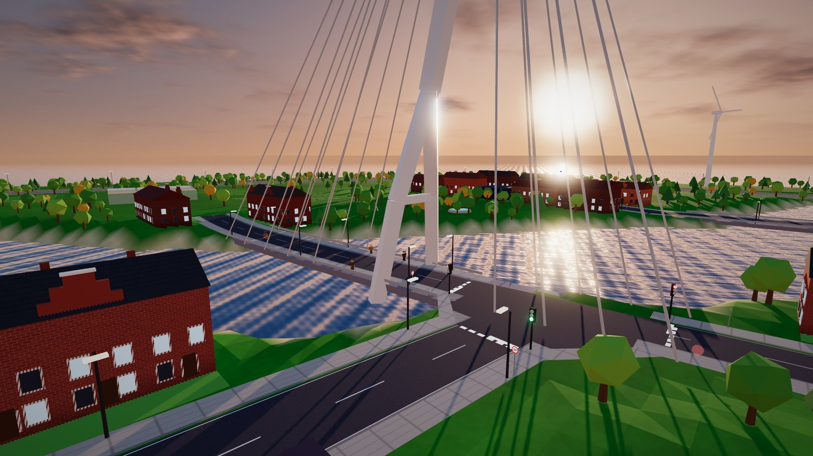
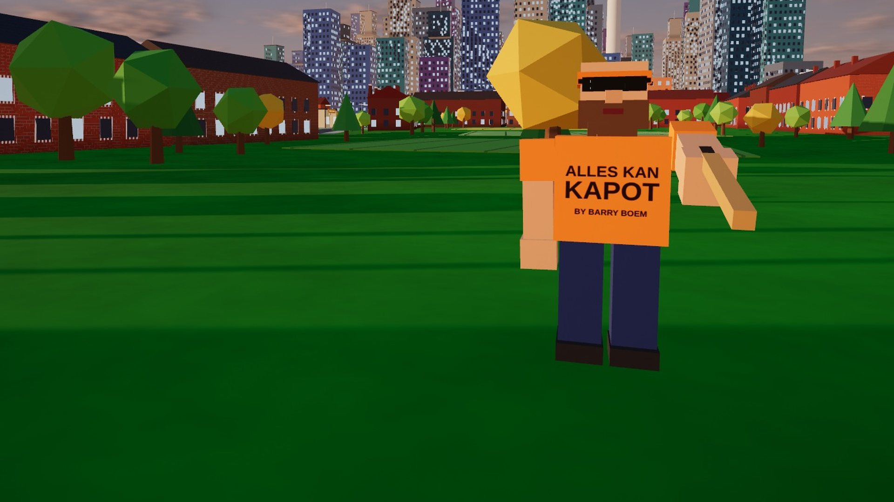
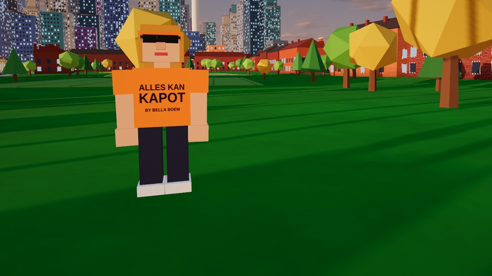
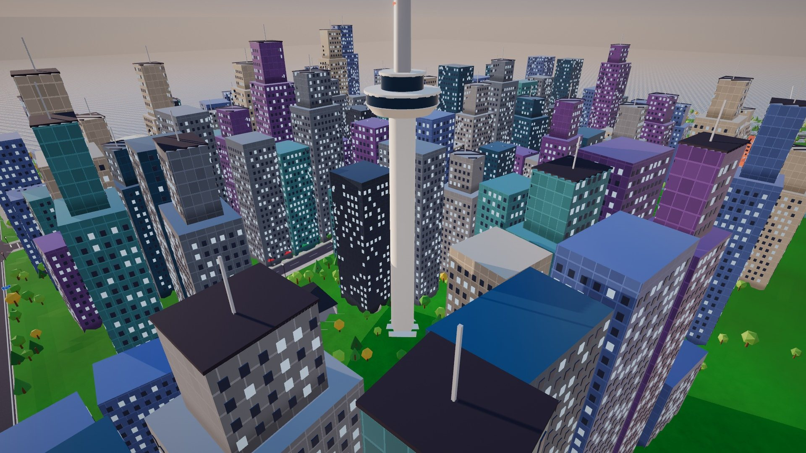
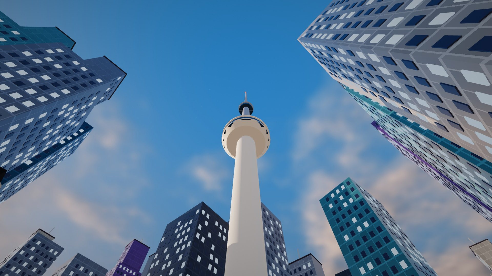
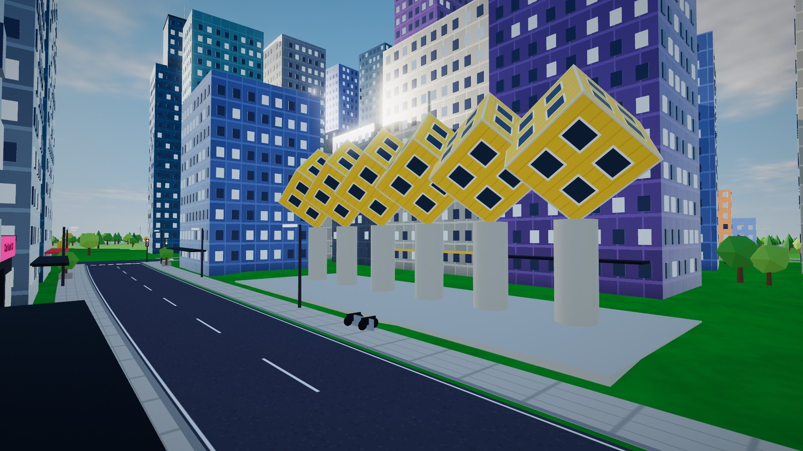
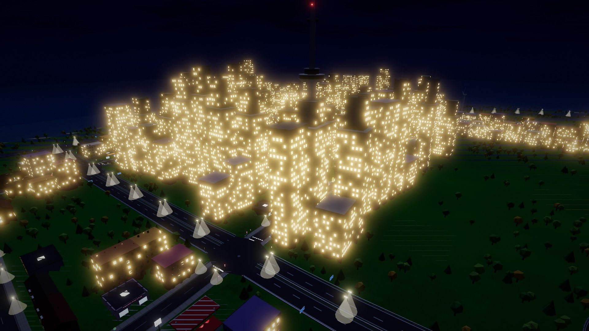

ROTTERDAM
VII
NL
EN
DE

ROTTERDAM
VII
SCROLL ↓
Container
VII-007
01
02
03

Barry
Boem

Bella
Boem


Maastoren

Kantelhuizen
Zwanenbrug

⭐
📻
🔧
🌧️
📱
🌍
Unreal Engine
5
🧍
🌆
📦
🎮
Windows 10 / 11 · 64-bit
± 100 MB
💬 Discord
✕
✕